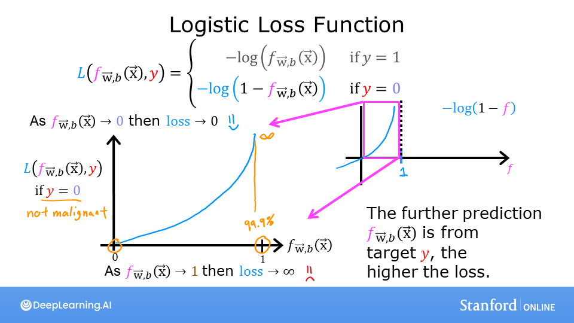
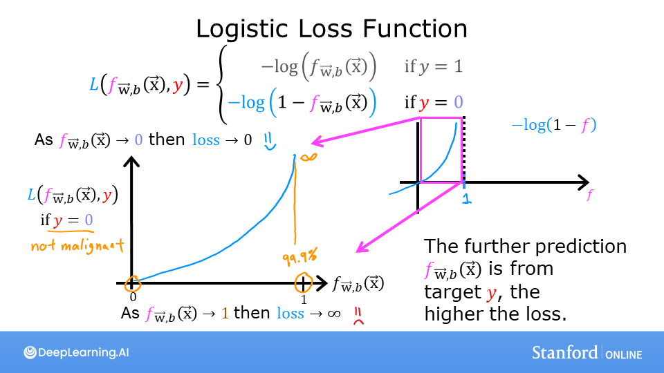

Optional Lab: Logistic Regression, Logistic Loss
In this ungraded lab, you will: - explore the reason the squared error loss is not appropriate for logistic regression - explore the logistic loss function
[1]:
import numpy as np
%matplotlib widget
import matplotlib.pyplot as plt
from plt_logistic_loss import plt_logistic_cost, plt_two_logistic_loss_curves, plt_simple_example
from plt_logistic_loss import soup_bowl, plt_logistic_squared_error
plt.style.use('./deeplearning.mplstyle')
Squared error for logistic regression?
 Recall for Linear Regression we have used the squared error cost function: The equation for the squared error cost with one variable is:
Recall for Linear Regression we have used the squared error cost function: The equation for the squared error cost with one variable is:
where
Recall, the squared error cost had the nice property that following the derivative of the cost leads to the minimum.
[2]:
soup_bowl()
This cost function worked well for linear regression, it is natural to consider it for logistic regression as well. However, as the slide above points out, \(f_{wb}(x)\) now has a non-linear component, the sigmoid function: \(f_{w,b}(x^{(i)}) = sigmoid(wx^{(i)} + b )\). Let’s try a squared error cost on the example from an earlier lab, now including the sigmoid.
Here is our training data:
[3]:
x_train = np.array([0., 1, 2, 3, 4, 5],dtype=np.longdouble)
y_train = np.array([0, 0, 0, 1, 1, 1],dtype=np.longdouble)
plt_simple_example(x_train, y_train)
Now, let’s get a surface plot of the cost using a squared error cost:
where
[4]:
plt.close('all')
plt_logistic_squared_error(x_train,y_train)
plt.show()
While this produces a pretty interesting plot, the surface above not nearly as smooth as the ‘soup bowl’ from linear regression!
Logistic regression requires a cost function more suitable to its non-linear nature. This starts with a Loss function. This is described below.
Logistic Loss Function
 
 
Logistic Regression uses a loss function more suited to the task of categorization where the target is 0 or 1 rather than any number.
Definition Note: In this course, these definitions are used:Loss is a measure of the difference of a single example to its target value while theCost is a measure of the losses over the training set
This is defined: * \(loss(f_{\mathbf{w},b}(\mathbf{x}^{(i)}), y^{(i)})\) is the cost for a single data point, which is:
- :nbsphinx-math:`begin{equation}
- loss(f_{mathbf{w},b}(mathbf{x}^{(i)}), y^{(i)}) = begin{cases}
logleft(f_{mathbf{w},b}left( mathbf{x}^{(i)} right) right) & text{if $y^{(i)}=1$}\
log left( 1 - f_{mathbf{w},b}left( mathbf{x}^{(i)} right) right) & text{if $y^{(i)}=0$}
end{cases}
end{equation}`
\(f_{\mathbf{w},b}(\mathbf{x}^{(i)})\) is the model’s prediction, while \(y^{(i)}\) is the target value.
\(f_{\mathbf{w},b}(\mathbf{x}^{(i)}) = g(\mathbf{w} \cdot\mathbf{x}^{(i)}+b)\) where function \(g\) is the sigmoid function.
The defining feature of this loss function is the fact that it uses two separate curves. One for the case when the target is zero or (\(y=0\)) and another for when the target is one (\(y=1\)). Combined, these curves provide the behavior useful for a loss function, namely, being zero when the prediction matches the target and rapidly increasing in value as the prediction differs from the target. Consider the curves below:
[5]:
plt_two_logistic_loss_curves()
Combined, the curves are similar to the quadratic curve of the squared error loss. Note, the x-axis is \(f_{\mathbf{w},b}\) which is the output of a sigmoid. The sigmoid output is strictly between 0 and 1.
The loss function above can be rewritten to be easier to implement.
\[\begin{split}\begin{align} loss(f_{\mathbf{w},b}(\mathbf{x}^{(i)}), 0) &= (-(0) \log\left(f_{\mathbf{w},b}\left( \mathbf{x}^{(i)} \right) \right) - \left( 1 - 0\right) \log \left( 1 - f_{\mathbf{w},b}\left( \mathbf{x}^{(i)} \right) \right) \\ &= -\log \left( 1 - f_{\mathbf{w},b}\left( \mathbf{x}^{(i)} \right) \right) \end{align}\end{split}\]and when $ y^{(i)} = 1$, the right-hand term is eliminated:
\[\begin{split}\begin{align} loss(f_{\mathbf{w},b}(\mathbf{x}^{(i)}), 1) &= (-(1) \log\left(f_{\mathbf{w},b}\left( \mathbf{x}^{(i)} \right) \right) - \left( 1 - 1\right) \log \left( 1 - f_{\mathbf{w},b}\left( \mathbf{x}^{(i)} \right) \right)\\ &= -\log\left(f_{\mathbf{w},b}\left( \mathbf{x}^{(i)} \right) \right) \end{align}\end{split}\]
OK, with this new logistic loss function, a cost function can be produced that incorporates the loss from all the examples. This will be the topic of the next lab. For now, let’s take a look at the cost vs parameters curve for the simple example we considered above:
[6]:
plt.close('all')
cst = plt_logistic_cost(x_train,y_train)
This curve is well suited to gradient descent! It does not have plateaus, local minima, or discontinuities. Note, it is not a bowl as in the case of squared error. Both the cost and the log of the cost are plotted to illuminate the fact that the curve, when the cost is small, has a slope and continues to decline. Reminder: you can rotate the above plots using your mouse.
Congratulation!
You have: - determined a squared error loss function is not suitable for classification tasks - developed and examined the logistic loss function which is suitable for classification tasks.
[6]: